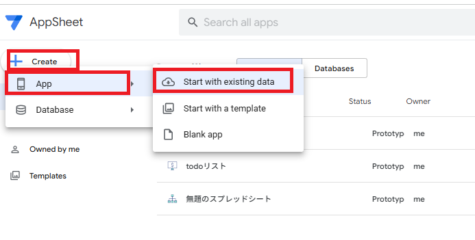
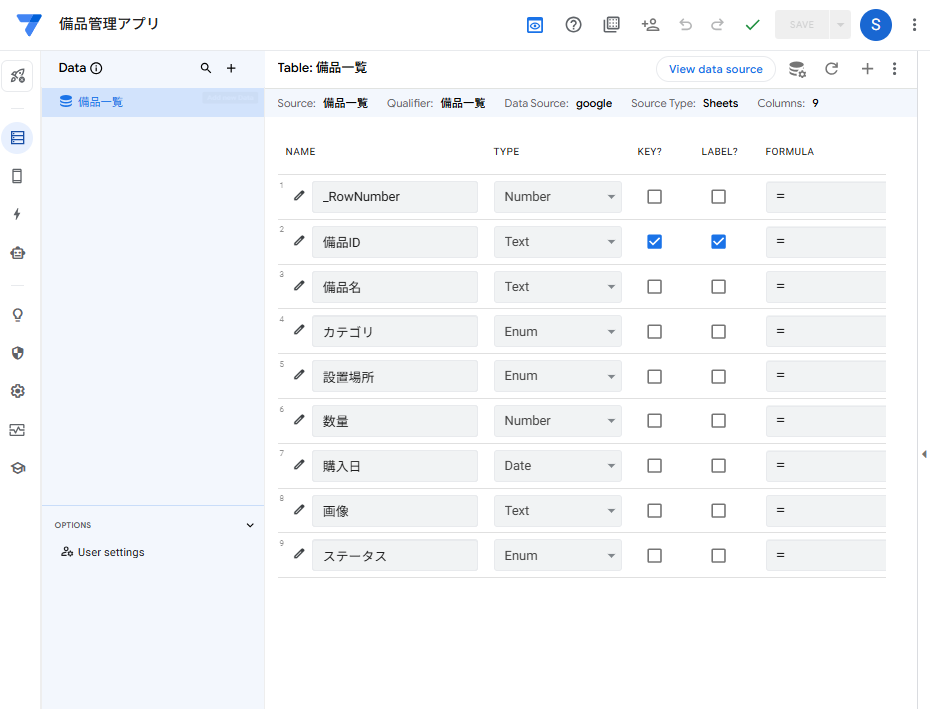
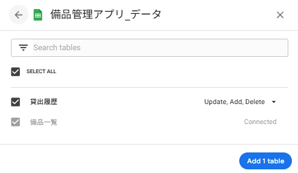
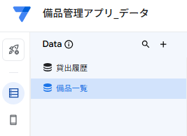
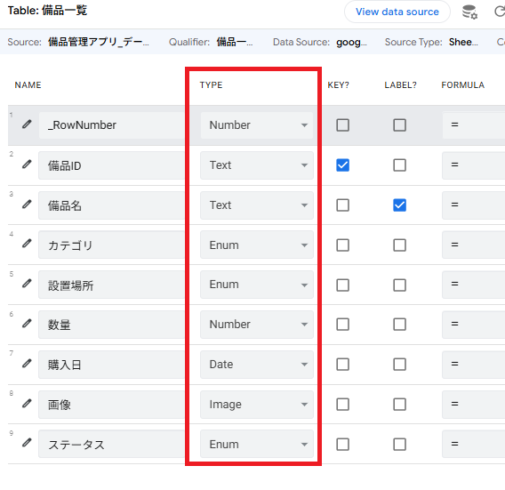
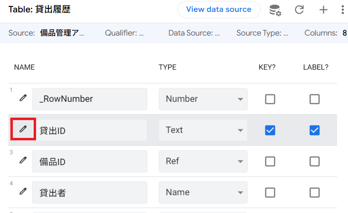
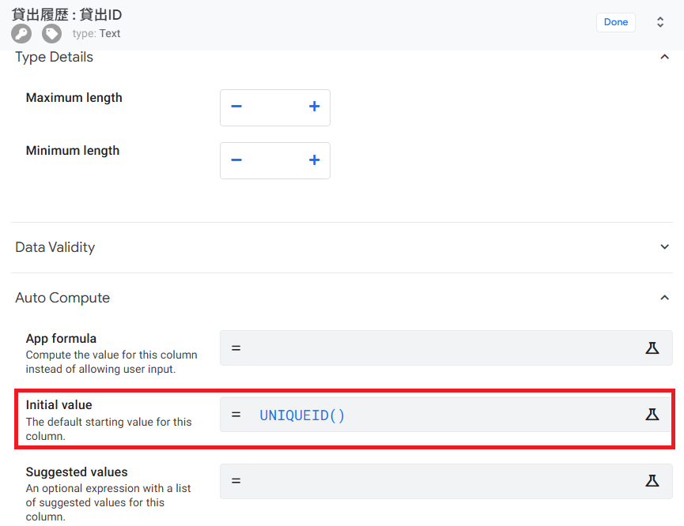
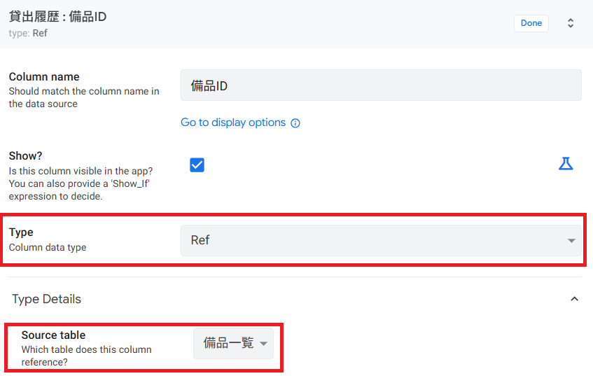
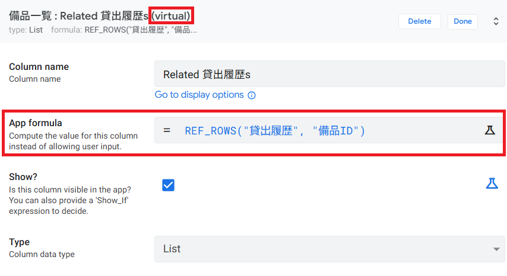

第3章：アプリを作ろう
スプレッドシートからアプリを生成し、データの設定を整えます
3-1 スプレッドシートからアプリを作成する
第2章で作成したGoogleスプレッドシートを使って、AppSheetアプリを自動生成します。プログラミングは一切不要で、数クリックでアプリの雛形が完成します。
■ 方法A：スプレッドシートから直接作成（推奨）
第2章で作成した Googleスプレッドシート（備品管理アプリ_データ）を開きます。
メニューバーの 「拡張機能」 → 「AppSheet」 → 「アプリを作成」 をクリックします。
自動的にAppSheetエディタが開き、スプレッドシートのデータが取り込まれたアプリが生成されます。

■ 方法B：AppSheetサイトから作成
https://www.appsheet.com にアクセスし、「My apps」 を開きます。
「+ Create」 → 「App」 → 「Start with existing data」 を選択します。
アプリ名に 「備品管理アプリ」 と入力し、データソースとして Google Sheets を選択してスプレッドシートを指定します。

App > Start with existing data」画面" style="width:100%; border-radius:8px; border:1px solid #d4dce8;">3-2 テーブルの確認と追加
アプリが作成されると、スプレッドシートの 最初のシート がテーブルとして自動取り込みされます。ここでは取り込まれたテーブルを確認し、2つ目のテーブル「貸出履歴」を追加します。
■ テーブルの確認
AppSheetエディタの左ナビゲーションから 「Data」 をクリックします。
左側のテーブル一覧に 「備品一覧」 が表示されていることを確認します。

Data画面で「備品一覧」テーブルのみが表示されている状態" style="width:100%; border-radius:8px; border:1px solid #d4dce8;">■ 「貸出履歴」テーブルを追加する
Data画面の左上にある 「+」（Add new table） ボタンをクリックします。
「Google Sheets」 を選択します。
同じスプレッドシート内の 「貸出履歴」 シートを選択して 「Add」 をクリックします。
左側のテーブル一覧に 「備品一覧」と「貸出履歴」の2つ が表示されていればOKです。


ch03-02-03.png
■ テーブルの基本設定
各テーブルにはいくつかの基本設定があります。以下の項目を確認しましょう。
| 設定項目 | 説明 | 備品一覧の設定 |
|---|---|---|
| Table Name | テーブルの表示名 | 備品一覧 |
| Data Source | データの保存先（変更不要） | Google Sheets |
| Are updates allowed? | データの追加・更新・削除を許可するか | すべて ON |
3-3 カラム型（データ型）を理解して修正する
AppSheetがスプレッドシートを取り込む際、各列の データ型（Type） を自動推測します。しかし、推測が正しくない場合があるため、手動で確認・修正する必要があります。
データ型を推測
チェック
変更・保存
■ よく使うデータ型一覧
| データ型 | 説明 | 使用例 |
|---|---|---|
| Text | 1行のテキスト（短い文字列） | 備品ID、備品名 |
| Name | 人物の名前を表すテキスト | 貸出者 |
| Number | 数値（整数） | 数量 |
| Date | 日付（年/月/日） | 購入日、貸出日 |
| Image | 画像ファイル | 備品の写真 |
| Enum | 選択肢（1つだけ選択） | カテゴリ、ステータス |
| Ref | 他テーブルへの参照（リレーション） | 貸出履歴の備品ID |
■ 「備品一覧」テーブルのカラム型を設定する
Data → 「備品一覧」 テーブルをクリックして、カラム一覧を表示します。
以下の表の通りに各カラムの TYPE が設定されているか確認し、異なる場合は修正します。
TYPE を変更するには、カラム名の横にある TYPE のドロップダウン をクリックし、正しい型を選択します。
すべて設定したら、右上の 「Save」 ボタンをクリックして保存します。
「備品一覧」テーブル ─ カラム型設定表
| カラム名 | 設定するTYPE | KEY | LABEL | 補足 |
|---|---|---|---|---|
| 備品ID | Text | ✅ ON | — | 一意のID。自動でKEYに設定される場合が多い |
| 備品名 | Text | — | ✅ ON | LABELに設定すると各行の表示名になる |
| カテゴリ | Enum | — | — | 選択肢が自動で生成される |
| 設置場所 | Enum | — | — | 選択肢が自動で生成される |
| 数量 | Number | — | — | 整数値 |
| 購入日 | Date | — | — | 日付型 |
| 画像 | Image | — | — | 空欄でもOK。アプリから写真を撮影して追加可能 |
| ステータス | Enum | — | — | 「在庫あり」「使用中」など |

■ 「貸出履歴」テーブルのカラム型を設定する
同様に「貸出履歴」テーブルのカラム型を確認・修正します。
「貸出履歴」テーブル ─ カラム型設定表
| カラム名 | 設定するTYPE | KEY | LABEL | 補足 |
|---|---|---|---|---|
| 貸出ID | Text | ✅ ON | ✅ ON | 一意のID。KEYとLABELの両方を設定 INITIAL VALUE 設定必須 |
| 備品ID | Ref | — | — | ⭐ 次のセクション3-4で設定 |
| 貸出者 | Name | — | — | 人物名 |
| 貸出日 | Date | — | — | 日付型 |
| 返却予定日 | Date | — | — | 日付型 |
| 返却日 | Date | — | — | 空欄 = 未返却 |
| メモ | Text | — | — | 備考欄 |
■ 貸出IDの Initial value を設定する（重要）
貸出履歴テーブルの「貸出ID」はキー列（KEY）です。第5章で作成する「貸出登録Action」では、備品一覧から貸出履歴テーブルに新しい行を自動追加しますが、AppSheetの仕様として キー列の値はAction内で設定できません。そのため、Initial value（初期値）を設定して、新しい行が追加されるたびに一意のIDが自動生成されるようにします。
Data → 「貸出履歴」 テーブルをクリックして、カラム一覧を表示します。
「貸出ID」 カラムの行にある 鉛筆マーク（✏️ Edit） をクリックして、カラム詳細設定パネルを開きます。
※ カラム名の右端にある小さな鉛筆アイコンです。
詳細設定パネル内を下にスクロールし、「Initial value」 の入力欄に以下の関数を入力します。
UNIQUEID()
※ 大文字・小文字を正確に入力してください。括弧 () も必要です。
右上の 「Save」 ボタンをクリックして保存します。ボタンが 青色 → 灰色 に変わったら保存完了です。


AppSheetの仕様上、「Data: add a new row to another table」アクションではキー列の値を設定できないため、キー列には必ず Initial value で自動生成の仕組みを入れておく必要があります。
AppSheetの関数で、8桁のランダムな英数字（例：
a1b2c3d4）を生成します。スプレッドシート上のサンプルデータ（L001, L002…）とは形式が異なりますが、一意性が保証されるため、アプリからの自動登録に適しています。既存のサンプルデータはそのまま残して問題ありません。
LABEL とは、アプリ上で各行を表示する際の「名前」となる列です。「備品名」をLABELにすると、一覧画面で「ノートPC（Dell Latitude）」のように表示されます。
3-4 Ref（リレーション）でテーブルを連携させる
「貸出履歴」テーブルの「備品ID」列を Ref型 に設定することで、「備品一覧」テーブルとの リレーション（関連付け） を作成します。これにより、貸出データから備品の詳細情報を参照できるようになります。
備品名（LABEL）
カテゴリ / 設置場所 / 数量 …
備品ID → Ref（備品一覧）
貸出者 / 貸出日 / 返却日 …
■ Refの設定手順
Data → 「貸出履歴」 テーブルをクリックして、カラム一覧を表示します。
「備品ID」 カラムの TYPE をクリックし、ドロップダウンから 「Ref」 を選択します。
「Source table」（参照先テーブル）のドロップダウンが表示されるので、「備品一覧」 を選択します。
設定が完了したら 「Done」 をクリックし、右上の 「Save」 ボタンで保存します。

・貸出履歴の入力画面で「備品ID」が ドロップダウンリスト になり、備品一覧から選択できるようになります。
・備品の詳細画面から、その備品の 貸出履歴を自動的に一覧表示 できるようになります。
・貸出履歴画面から ワンタップで備品の詳細画面に遷移 できるようになります。
3-5 Virtual Column（仮想列）を確認する
Ref（リレーション）を設定すると、AppSheetが自動的に Virtual Column（仮想列） を作成します。仮想列は、スプレッドシートには存在せず、AppSheet内でのみ使われる計算用の列です。
■ 自動作成されるVirtual Column
3-4でRefを設定した結果、「備品一覧」テーブルに以下のような仮想列が自動で追加されます。
| 仮想列名（例） | 種類 | 説明 |
|---|---|---|
| 貸出履歴（Related 貸出履歴s） | REF_ROWS | この備品に紐づく貸出履歴の一覧。備品の詳細画面で貸出履歴がインラインで表示される |
■ Virtual Columnの確認手順
Data → 「備品一覧」 テーブルのカラム一覧を表示します。
カラム一覧の下部に、名前の横に 「Virtual」 と表示された列があることを確認します。
この仮想列をクリックすると、App formula に REF_ROWS("貸出履歴", "備品ID") のような式が設定されていることが確認できます。

■ 第3章のまとめ
| No. | やったこと | ポイント |
|---|---|---|
| 1 | スプレッドシートからアプリ作成 | 「拡張機能 > AppSheet > アプリを作成」が最も簡単 |
| 2 | テーブルの確認と設定 | 2つのテーブルが取り込まれたことを確認 |
| 3 | カラム型の確認・修正 | 自動推測を確認し、Enum / Date / Image 等に修正 |
| 4 | 貸出IDの Initial value 設定 | Initial value に UNIQUEID() を設定（第5章の前提） |
| 5 | Refでテーブル連携 | 貸出履歴の備品ID → 備品一覧をRef参照 |
| 6 | Virtual Columnの確認 | Ref設定で自動生成される逆参照列を確認 |